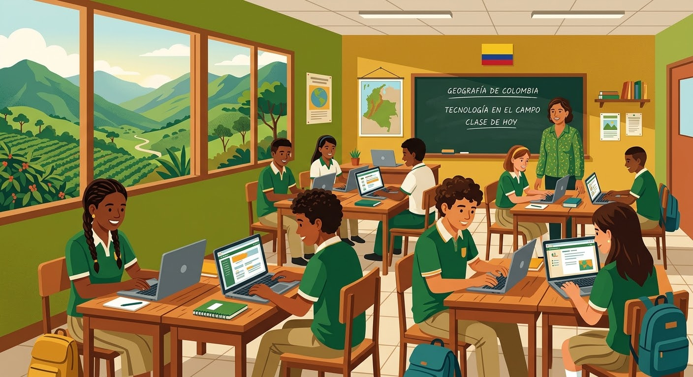
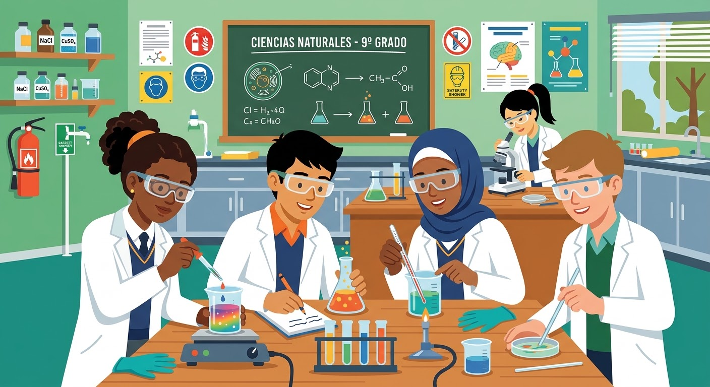
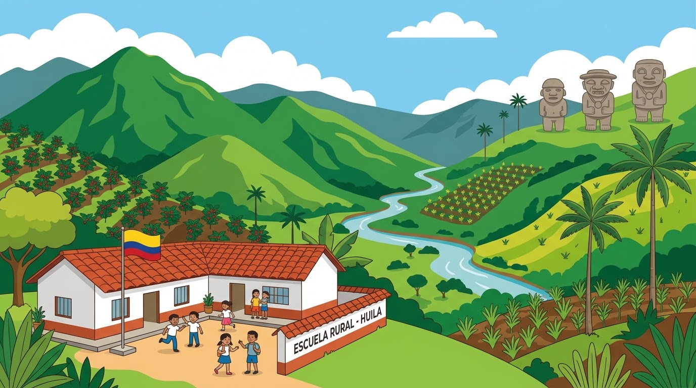
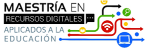

Avatar 1 · El trabajo de grado
Video
Facultad de Ciencias Sociales y Educación · Maestría en Recursos Digitales Aplicados a la Educación · Universidad de Cartagena
Zohami Judith Ardila Ramos
Proyecto de Aula I
Por definir




Saladoblanco, Huila, Colombia · 8 de junio de 2026
Dos avatares en video presentan el trabajo de grado y el problema de investigación.
Justificación, metodología y objetivos del trabajo de grado en una sola vista.
Innovación educativa para el fortalecimiento del rendimiento académico en la educación básica.
El bajo rendimiento resulta de la interacción entre metodologías tradicionales, motivación y contexto escolar.
Impulsa el aprendizaje significativo (Ausubel) y mediado socialmente (Vygotsky), basado en indagación científica.
Intervención en grado noveno para consolidar competencias clave antes de la educación media.
Google Classroom estructurado intencionalmente para organizar recursos y fomentar el aprendizaje autónomo.
Genera evidencia empírica y metodologías aplicables a la institución y a contextos similares.
Fortalecer el rendimiento académico en Ciencias Naturales mediante una estrategia pedagógica mediada por Google Classroom en los estudiantes de grado noveno de la Institución Educativa Municipal Misael Pastrana Borrero, en Saladoblanco, Huila.
Mixto (cuantitativo y cualitativo).
Aplicada, descriptiva y explicativa.
Estudiantes de grado noveno de la Institución Educativa Municipal Misael Pastrana Borrero.
Pruebas de diagnóstico y de salida, encuestas, observación y análisis documental.
Diagnóstico → Diseño → Implementación → Evaluación.
Mejora en el rendimiento académico.
Mayor motivación y participación.
Desarrollo de competencias digitales y científicas.
Fortalecimiento del trabajo autónomo y colaborativo.
Diagnosticar el nivel actual de rendimiento académico.
Diseñar la estrategia pedagógica mediada por la plataforma.
Implementar la propuesta didáctica estructurada en el aula.
Evaluar el impacto de la intervención en el desempeño.
Video explicativo y podcast del Capítulo 2: planteamiento y formulación del problema.
Estructura de la unidad que se implementará en Google Classroom con el grado noveno. Los campos marcados se completan cuando el equipo defina el tema.
| Institución | Institución Educativa Municipal Misael Pastrana Borrero, Saladoblanco, Huila |
|---|---|
| Área y grado | Ciencias Naturales · Grado noveno (25 estudiantes) |
| Tema de la unidad | Por definir |
| Referentes de calidad | Derechos Básicos de Aprendizaje de Ciencias Naturales (MEN, 2016) y estándares de competencias del área. |
| Propósito | Fortalecer la comprensión conceptual, la participación y el desempeño académico mediante actividades contextualizadas y evaluación formativa. |
| Plataforma | Google Classroom: material, tareas, cuestionarios, anuncios y comentarios de retroalimentación. |
Saberes previos y motivación
Construcción del concepto
Indagación y aplicación
Seguimiento y mejora
Las cuatro fases de la propuesta siguen los objetivos específicos del trabajo de grado.
Objetivo específico 1
Objetivo específico 2
Objetivo específico 3
Objetivo específico 4
Pregunta que orienta el proceso: ¿de qué manera la implementación de una estrategia pedagógica mediada por Google Classroom fortalece el rendimiento académico en Ciencias Naturales?
Se organiza con el modelo ADDIE (análisis, diseño, desarrollo, implementación y evaluación) y se relaciona con cada objetivo específico.
| Fase | Qué se hace | Objetivo relacionado |
|---|---|---|
| Análisis | Contexto de la institución, perfil de los 25 estudiantes de noveno, necesidades y conectividad; diagnóstico del rendimiento en Ciencias Naturales. | 1. Diagnosticar |
| Diseño | Objetivos de aprendizaje alineados con los DBA, secuencia de actividades, estrategia de evaluación formativa y estructura del curso en Classroom. | 2. Diseñar |
| Desarrollo | Elaboración de materiales, guías, cuestionarios y rúbricas; carga y organización por temas en Google Classroom. | 2. Diseñar |
| Implementación | Trabajo con los estudiantes, acompañamiento docente permanente, comunicación y retroalimentación en la plataforma. | 3. Implementar |
| Evaluación | Comparación de resultados con el diagnóstico, análisis de participación y ajustes a la estrategia. | 4. Evaluar |
El producto es una estrategia pedagógica mediada por Google Classroom para fortalecer el rendimiento en Ciencias Naturales de grado noveno.
Guion de un tutorial breve para que estudiantes y docentes se ubiquen en el curso de Google Classroom.
Video tutorial en producción
| Escena | Contenido | Duración |
|---|---|---|
| 1. Bienvenida | Presentación del proyecto y del objetivo del curso. | 20 s |
| 2. Ingreso | Cómo entrar a Google Classroom y unirse con el código de clase. | 40 s |
| 3. Recorrido | Tablón, trabajo de clase, personas y calificaciones. | 60 s |
| 4. Actividades | Abrir una tarea, adjuntar evidencia y entregar. | 60 s |
| 5. Retroalimentación | Ver comentarios y rúbrica del docente. | 30 s |
Normas APA, séptima edición.
Abreu Amador, M., & Mejía de la Cruz, W. (2020). Factores que influyen en el bajo rendimiento escolar en la asignatura Ciencias de la Naturaleza, de 2do de secundaria, del Instituto Politécnico Max Henríquez Ureña, en el año escolar 2019-2020 [Trabajo de grado, Universidad Nacional Pedro Henríquez Ureña]. Repositorio Institucional UNPHU. https://repositorio.unphu.edu.do/items/31fed557-f07c-404b-b21a-e9282d60e6e4
Cabrera Pardo, L. N., Salazar Piñerez, J. T., & Suarez Acevedo, C. M. (2022). Fortalecimiento de las competencias científicas en el área de Ciencias Naturales, mediante la aplicación de una unidad didáctica basada en prácticas de laboratorio, para estudiantes de grado cuarto de la Institución Educativa Juan Cristóbal Martínez del municipio San Juan de Girón-Santander [Trabajo de grado, Corporación Universitaria Minuto de Dios]. Repositorio Institucional UNIMINUTO.
Coll, C. (2009). Aprender y enseñar con las TIC: expectativas, realidad y potencialidades. En R. Carneiro, J. C. Toscano, y T. Díaz (Coords.), Los desafíos de las TIC para el cambio educativo (pp. 113-126). OEI-Fundación Santillana.
Cruz Benítez, J. E., & Fernández Díaz, O. R. (2024). Fortalecimiento de la competencia de indagación en el área de Ciencias Naturales de los estudiantes del grado noveno de la Institución Educativa San Andrés Tello mediante un espacio virtual de aprendizaje y el uso de recursos educativos digitales (RED) [Trabajo de grado de maestría, Universidad de Cartagena]. Repositorio Institucional Unicartagena.
Education Endowment Foundation. (2019). Using Digital Technology to Improve Learning [Uso de la tecnología digital para mejorar el aprendizaje]. EEF Guidance Report.
Falla Cuéllar, D. F., & Cruz Herrera, L. A. (2020). Actitudes de los estudiantes y propuesta alternativa para la enseñanza-aprendizaje de las Ciencias Naturales en las instituciones educativas de la ciudad de Neiva-Huila. Revista PACA, 10, 83–100. https://doi.org/10.25054/2027257X.2880
Furman, M. (2021). Enseñar distinto: Guía para innovar en el aula. Siglo XXI Editores.
Gualguán Luna, G. (s.f.). Causas del bajo rendimiento en las áreas de Ciencias Sociales y Ciencias Naturales [Trabajo de grado, Universidad Católica de Manizales]. Repositorio de la Universidad Católica de Manizales. https://repositorio.ucm.edu.co/server/api/core/bitstreams/8cf5675e-52a9-4a73-b626-8022db3c1168/content
Instituto Colombiano para la Evaluación de la Educación [ICFES]. (2023). Informe Nacional de Resultados de las Pruebas Saber 11 - 2023. Ministerio de Educación Nacional.
Instituto Colombiano para la Evaluación de la Educación [ICFES]. (2024). Reporte de resultados Saber 11 por Entidades Territoriales Certificadas. Ministerio de Educación Nacional.
Leiton Leiton, D. R., Tamayo León, J. A., Ramírez González, E. G., Engracia Carvallo, D. E., & Ramírez González, S. Y. (2024). Estrategia metodológica para el mejoramiento del rendimiento académico en la asignatura de ciencias naturales en los estudiantes de educación básica. Estudios y Perspectivas Revista Científica y Académica, 4(2). https://doi.org/10.61384/r.c.a..v4i2.221
Melo-Solarte, D. S., & Díaz, P. A. (2018). El aprendizaje significativo y la evaluación formativa a través de Google Classroom. Revista Iberoamericana de Educación, 76(2), 53-70.
Ministerio de Educación Nacional [MEN]. (2016). Derechos Básicos de Aprendizaje: Ciencias Naturales. Bogotá, Colombia: Panamericana Formas e Impresos S.A.
Organización de las Naciones Unidas para la Educación, la Ciencia y la Cultura [UNESCO]. (2023). Informe de Seguimiento de la Educación en el Mundo 2023: La tecnología en la educación: ¿Una herramienta en los términos de quién?. París: UNESCO.
Organización para la Cooperación y el Desarrollo Económicos [OCDE]. (2023). Resultados de PISA 2022 (Volumen I): El estado del aprendizaje y la equidad en la educación. OECD Publishing.
Pacheco, O. (2023, 20 de febrero). El trabajo práctico como estrategia para el fortalecimiento del aprendizaje de las ciencias naturales en estudiantes de séptimo grado en la Institución Etnoeducativa Makumake [Trabajo de grado, Universidad Mariana]. Repositorio Institucional Unimariana. https://repositorio.umariana.edu.co/items/6ad0cdc8-1a0e-4566-95b6-fb08f02ea4ca
Quintero-Fierro, Y. K., & Vargas-Zúñiga, K. T. (2023). Refuerzo pedagógico como estrategia para el mejoramiento del aprendizaje en Ciencias Naturales. Revista Electrónica EDUCyT, 14(Número extra), 789–795.
Quintero Trujillo, Ó. I. (2023). Uso de una estrategia pedagógica basada en la gamificación para el fortalecimiento del aprendizaje de las Ciencias Naturales de los estudiantes del grado noveno de la Institución Educativa San Antonio del Pescado del municipio de Garzón-Huila [Tesis de grado, Universidad Surcolombiana]. Repositorio Institucional USCO.
Santana Santana, R. B. (2024). Estrategia para mejorar el rendimiento académico en las ciencias de la naturaleza en estudiantes de segundo de secundaria. UCE Ciencia. Revista de Postgrado, 12(2). https://uceciencia.edu.do/index.php/OJS/article/view/371
Vargas, L. A. C. (2024). Rendimiento académico en el área de Ciencias Naturales en estudiantes de bachillerato. REDHECS: Revista Electrónica de Humanidades, Educación y Comunicación Social, 32(25), 10–24. https://dialnet.unirioja.es/servlet/articulo?codigo=10161601
Yahya, S. M., & Ayasrah, M. N. (2018). Causes of 8th grade students' low achievement in TIMSS Study-2015 from science teachers and educational supervisors. Review of European Studies, 10(1), 124–139. https://doi.org/10.5539/res.v10n1p124
A la Universidad de Cartagena y a la Maestría en Recursos Digitales Aplicados a la Educación por la formación recibida.
A la docente Zohami Judith Ardila Ramos, tutora de Proyecto de Aula I, por su orientación durante el desarrollo de este portafolio.
A la Institución Educativa Municipal Misael Pastrana Borrero, a sus directivos, docentes, familias y a los estudiantes de grado noveno, protagonistas de este proyecto.
A nuestras familias por su apoyo y paciencia a lo largo de este proceso.
Este portafolio se comparte bajo la licencia Creative Commons Atribución-NoComercial-CompartirIgual 4.0 Internacional. Puedes copiar, redistribuir y adaptar el material citando a las autoras y al autor, sin fines comerciales y compartiendo las obras derivadas con la misma licencia.
Las referencias de terceros conservan los derechos de sus titulares.
Toca cualquier apartado para ir a él.